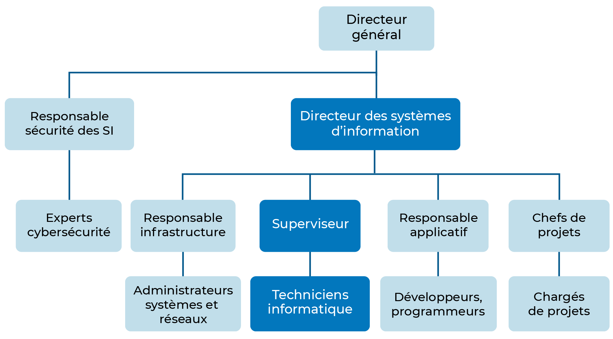
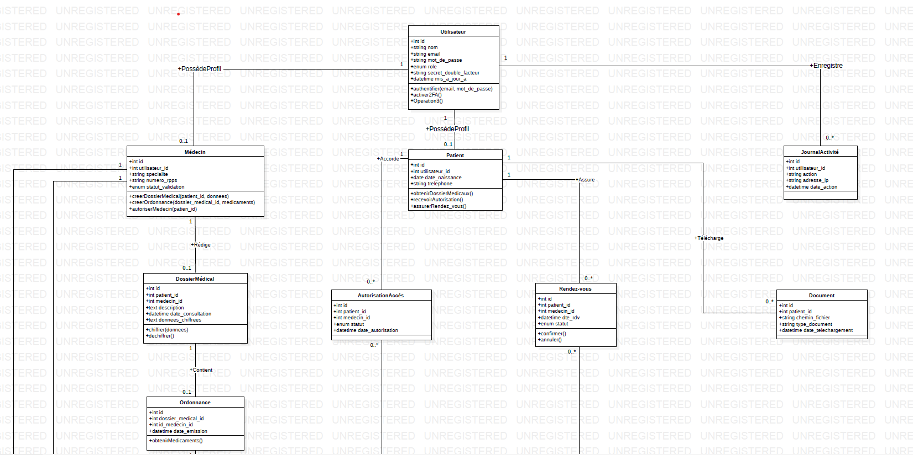
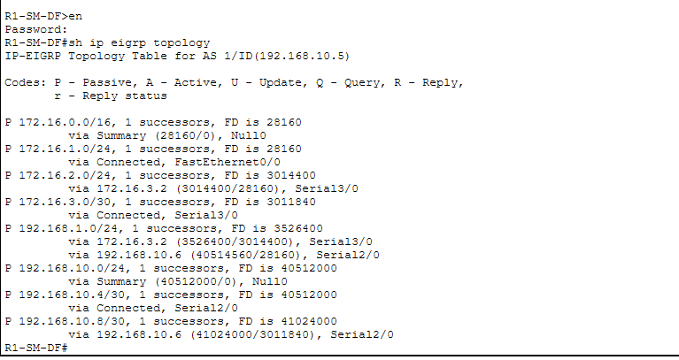

Mastere 1 Cybersecurite
EFREI Paris · Admission obtenue
Portfolio cybersecurite
Etudiante admise en Mastere 1 Cybersecurite a EFREI Paris
Je construis mon parcours autour du SOC, de la securite defensive, des infrastructures reseaux et de la gouvernance SSI. Je recherche une alternance en cybersecurite, administration systemes et reseaux ou SOC a partir de septembre 2026.
A propos de moi
Actuellement en Bachelor 3 Informatique, specialite Reseaux & Cybersecurite a l'ECE Paris, et admise en Mastere Cybersecurite a EFREI Paris, je developpe une approche complete de la securite : technique, operationnelle et documentaire.
Mes projets m'ont permis de travailler sur des environnements proches de cas reels : SIEM, centralisation de logs, reponse aux incidents, Active Directory, segmentation reseau, durcissement Windows/Linux, supervision d'infrastructure et analyse de risques.
Formation
EFREI Paris · Admission obtenue
ECE Paris · GRC, cryptographie, agile, pentest, reseaux avances
KEYCE Informatique & IA, Cameroun · Architecture, virtualisation, algorithmique
Experiences professionnelles
PAGES INTERNATIONAL, Douala · SecOps & GRC · Teletravail
ABC Finance, Douala · Support IT N1 & N2
Mes competences
Wazuh SIEM · Shuffle SOAR · TheHive · Analyse de logs · Gestion des incidents · IR · SOC · SecOps
Analyse de risques · EBIOS · ISO 27001 · ISO 27005 · NIS2 · RGPD · DORA · PCI-DSS · Procedures SSI
Nmap · Netcat · Reverse Shell · Burp Suite notions · Metasploit notions · TryHackMe Top 5%
TCP/IP · OSI · VLAN · NAT · DHCP · DNS · VPN · Firewall · Wireshark · Cisco · EIGRP · OSPF · pfSense
Windows Server · Active Directory · GPO · Kali Linux · Ubuntu · VMware · VirtualBox · Docker · Zabbix
Python · Java · PHP · C · HTML/CSS · JavaScript · Spring Boot · MySQL · Laravel · React
Mes projets

Architecture SOC distribuee sur 8 machines virtuelles pour un SI bancaire simule : pfSense, Wazuh, Zabbix, Grafana, Active Directory, postes Windows et Ubuntu.
Stack Wazuh, Shuffle SOAR, TheHive et VirusTotal API pour enrichir les IoC, creer des tickets et automatiser certaines actions de reponse.

Application medicale securisee avec roles administrateur, medecin et patient, gestion du consentement, journal d'audit, controle d'acces et protection des donnees de sante.

Mise en oeuvre d'EIGRP sur une topologie de trois routeurs, avec analyse des voisinages, tables de routage, metriques et tests de connectivite.
Creation de plusieurs sous-reseaux VMware relies par un routeur Linux, avec routage IP, serveur Apache, firewall et tests Netcat.
Audits et remediations avec CIS Benchmark, Microsoft Security Compliance Toolkit, Lynis, Debian CIS, auditd, fail2ban et SSH hardening.
Reconnaissance, exploitation d'une injection Python, obtention d'un reverse shell, analyse Git forensics et elevation de privileges.
Outil de bilan de maturite cybersecurite pour PME, base sur un questionnaire de 55 questions, un scoring pondere et des recommandations personnalisees.
Mon CV
Je recherche une alternance a partir de septembre 2026 en cybersecurite, SOC, SecOps, GRC, administration systemes et reseaux.
Certifications
Contact